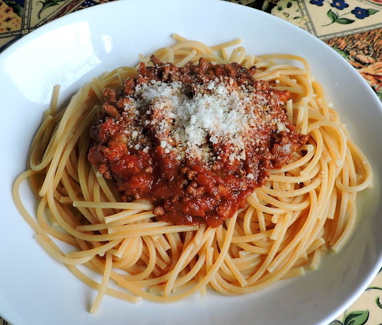

Bolognese

Spaghetti Bolognese
Bolognese sauce,[a] known in Italian as ragù alla bolognese[b] or ragù bolognese (called ragù in the city of Bologna, ragó in Bolognese dialect),
is a meat-based sauce in Italian cuisine, typical of the city of Bologna.[2] It is customarily used to dress tagliatelle al ragù and to prepare lasagne alla bolognese.
Ingredients include a characteristic soffritto of onion, celery, and carrot, different types of minced or finely chopped beef, often alongside small amounts of fatty pork.
Ingredients
- ¼ cup olive oil
- 1 onion, chopped
- 2 cloves garlic, minced
- 1 pound lean ground beef
- ¼ pound thinly sliced prosciutto, chopped
- 4 tablespoons butter
- 2 roma (plum) tomatoes, chopped
- ¼ cup tomato paste
- 1 teaspoon salt
- 1 teaspoon ground black pepper
Directions
- In a large saucepan saute the onion and garlic in the olive oil.
- Add ground beef and continue cooking.
- Stir in prosciutto and cook for 5 to 6 minutes.
- Add 2 tablespoons of the butter, chopped tomatoes, and tomato paste.
- Let sauce simmer for 10 minutes.
- Season with salt and pepper.
- Simmer for one hour.
- Add additional butter and simmer for an additional half hour
Credits